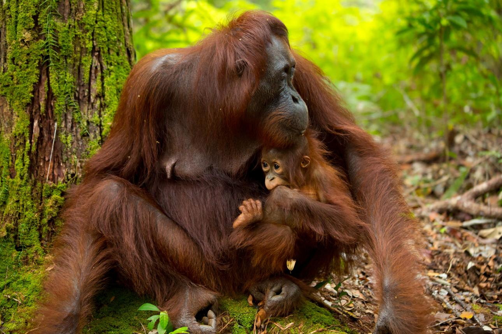
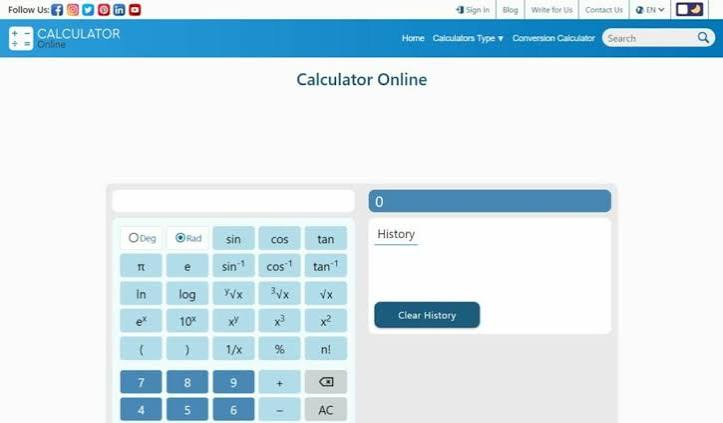
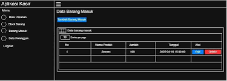

👋 Halo, Saya
Andika Panjaitan
Web Developer & UI/UX Designer
Mahasiswa Sistem Informasi yang memiliki minat di bidang pengembangan web, desain antarmuka, dan teknologi modern.

Mahasiswa Sistem Informasi yang memiliki minat di bidang pengembangan web, desain antarmuka, dan teknologi modern.
Halo, saya Andika Panjaitan, mahasiswa Program Studi Informatika di Universitas Satya Terra Bhinneka yang saat ini sedang menempuh semester 2. Saya memiliki ketertarikan besar pada bidang teknologi, khususnya robotika, informatika, dan elektronika. Saya senang mempelajari hal-hal baru, mengembangkan kemampuan pemrograman, serta mencoba berbagai proyek yang dapat meningkatkan keterampilan teknis maupun kreativitas saya. Melalui perkuliahan dan proyek pribadi, saya terus berusaha untuk berkembang dan menambah pengalaman di dunia teknologi. Moto hidup saya adalah "Life is an adventure, enjoy the journey", karena saya percaya bahwa setiap proses pembelajaran adalah perjalanan yang berharga untuk mencapai tujuan di masa depan.
Project
Tahun Belajar
Waktu begadang
Dedikasi
S1 Informatika
Jurusan Audio Video(Elektro)

UI/UX Design menggunakan Figma

HTML CSS JavaScript

Python + OpenCV

Arduino Dan beberapa Komponen

Dibuat menggunakan Java dan MySQL untuk mengelola data barang, transaksi, dan laporan penjualan.

Proyek IoT yang menggunakan Arduino Uno dan sensor ultrasonik untuk membuka tutup tong sampah secara otomatis saat mendeteksi adanya objek di dekat sensor.

Sertifikat penyelesaian pelatihan SDGS 101

pegentasan Kemiskinan

Grand MOS

andikapanjaitan39@gmail.com
@yari_katchi
github.com/yari_katchi
Medan, Indonesia